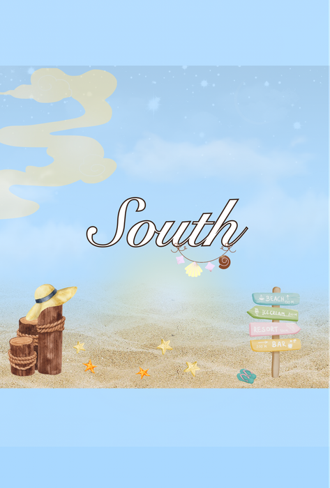
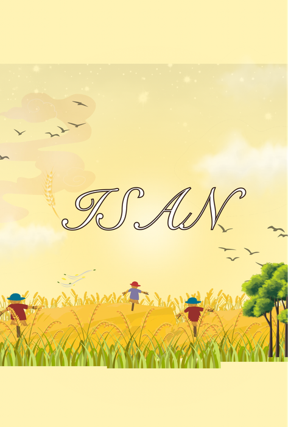
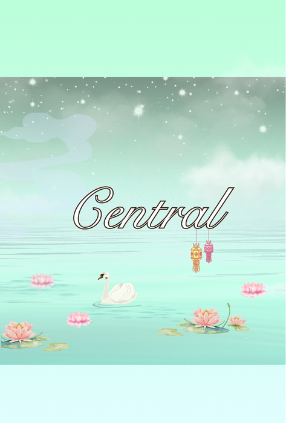

โครงการทิศทางเฟรชชี่
The Freshy Bearing
01 แดชบอร์ด & สถิตินิสิตใหม่
สัดส่วนนิสิตแยกตามคณะ
จำนวนนิสิตแต่ละกลุ่มทิศแยกตามรอบกิจกรรม
รายละเอียดจำนวนนิสิตแยกตามสาขาวิชา
| สาขาวิชา | คณะ | จำนวน (คน) | สัดส่วน (%) |
|---|
02 ตรวจสอบสิทธิ์และข้อมูลกลุ่มกิจกรรม
กรอกรหัสนิสิต 10 หลัก (เช่น 6930XXXXXX) เพื่อค้นหาข้อมูลกลุ่มกิจกรรมและด่านทิศทางของคุณ
03 กำหนดการโครงการทิศทางเฟรชชี่
วันกิจกรรมใหญ่แบ่งออกเป็น 2 ช่วงเวลาหลักใน **วันเสาร์ที่ 27 มิถุนายน พ.ศ. 2569** และคอนเสิร์ตใหญ่ **วันพฤหัสบดีที่ 2 กรกฎาคม พ.ศ. 2569**
กลุ่มเช้า (Morning Group)
อาคาร 13 พลศึกษาลงทะเบียนพร้อมแจกป้ายชื่อ
นิสิตใหม่รอบเช้า ลงทะเบียนเข้าร่วมกิจกรรมและรับป้ายชื่อระบุทิศทางกิจกรรมตามสิทธิ์ที่ได้สุ่มไว้
พิธีเปิดโครงการทิศทางเฟรชชี่
กล่าววัตถุประสงค์โดยหัวหน้าโครงการ และรองอธิการบดีวิทยาเขตศรีราชากล่าวเปิดงาน
กิจกรรม Ice Breaking / สัมพันธ์กลุ่ม 4 ทิศ
นิสิตใหม่เข้าร่วมกิจกรรมสัมพันธ์กระชับมิตรและสันทนาการร่วมกับสมาชิกในธีมกลุ่มของตนเอง
กิจกรรมสอนน้องร้องเพลง
เรียนรู้ประวัติศาสตร์มหาวิทยาลัย (5 นาที) ฝึกร้องเพลงเกษตรศาสตร์ (15 นาที) เพลงนนทรี (15 นาที) ร้องทวน และฝึกบูม AGGIE BOOM (15 นาที)
รับประทานอาหารว่าง
แจกจ่ายของว่างและเครื่องดื่มให้แก่นิสิตใหม่เพื่อพักคุยสร้างเพื่อนใหม่
กิจกรรมแปรอักษร และสิ้นสุดกิจกรรม
แปรอักษรสัญลักษณ์แห่งความสามัคคีของนิสิตใหม่ KU86 บนอัฒจันทร์/ลานกิจกรรม และสิ้นสุดกิจกรรมรอบเช้า
กลุ่มบ่าย (Afternoon Group)
อาคาร 13 พลศึกษาลงทะเบียนพร้อมแจกป้ายชื่อ
นิสิตใหม่รอบบ่าย ลงทะเบียนเข้าร่วมกิจกรรมและรับป้ายชื่อระบุทิศทางกิจกรรมตามสิทธิ์ที่ได้สุ่มไว้
พิธีเปิดโครงการทิศทางเฟรชชี่ (รอบบ่าย)
กล่าววัตถุประสงค์โดยหัวหน้าโครงการ และรองอธิการบดีวิทยาเขตศรีราชากล่าวเปิดงานในรอบบ่าย
กิจกรรม Ice Breaking / สัมพันธ์กลุ่ม 4 ทิศ
เรียนรู้วัฒนธรรมและแนวคิดประจำกลุ่มผ่านกิจกรรมความสัมพันธ์และสันทนาการร่วมกับเพื่อนใหม่
กิจกรรมสอนน้องร้องเพลง
เรียนรู้ประวัติศาสตร์มหาวิทยาลัย (5 นาที) ฝึกร้องเพลงเกษตรศาสตร์ (15 นาที) เพลงนนทรี (15 นาที) ร้องทวน และฝึกบูม AGGIE BOOM (15 นาที)
กิจกรรมแปรอักษรกลุ่มบ่าย
ร่วมใจแปรอักษรสัญลักษณ์แห่งความสามัคคีของนิสิตใหม่ KU86 บนอัฒจันทร์/ลานกิจกรรม
รับประทานอาหารว่าง
พักผ่อนพูดคุยทำความรู้จักรับกล่องของว่าง และเตรียมเดินทางกลับ
สิ้นสุดกิจกรรม
สิ้นสุดกิจกรรมในรอบบ่าย และเดินทางกลับโดยสวัสดิภาพ
Freshy Night Concert (2 ก.ค. 69)
อาคาร 13 พลศึกษาลงทะเบียนเข้าร่วมกิจกรรม
เปิดจุดลงทะเบียนบริเวณทางเข้างาน พร้อมรับของที่ระลึกพิเศษสำหรับผู้เข้าร่วม
กิจกรรมนันทนาการและแสดงบนเวที
การแสดงของชมรมดนตรีสากล สโมสรนิสิต และวงดนตรีจากรุ่นพี่คณะต่างๆ
การแสดงจากศิลปินรับเชิญวงที่ 1
สนุกสนานกับคอนเสิร์ตจากศิลปินรับเชิญยอดนิยมวงแรก เพื่อปลดปล่อยความสนุกแบบเต็มพิกัด
กิจกรรมอินเตอร์แอคทีฟบนเวที
การเล่นเกมแจกของรางวัลสุดพรีเมียมจากผู้สนับสนุน และสุ่มจับรางวัลผู้โชคดี
การแสดงจากศิลปินรับเชิญวงที่ 2
ไฮไลต์ปิดท้ายค่ำคืนกับคอนเสิร์ตจัดเต็มสุดประทับใจส่งท้ายสัปดาห์เฟรชชี่
เสร็จสิ้นโครงการพร้อมประเมิน
กล่าวปิดงานโดยประธานองค์การนิสิต สแกนคิวอาร์โค้ดประเมินโครงการ และแยกย้ายเดินทางกลับอย่างปลอดภัย
04 ธีมการสุ่มแบ่งกลุ่มกิจกรรม 4 ทิศ
เพื่อเป็นการกระชับความสัมพันธ์และเรียนรู้ทักษะชีวิตในมหาวิทยาลัย นิสิตใหม่ทุกคนจะถูกสุ่มแบ่งออกเป็น 4 ทีมตามธีมทิศทางลมของกังหันลม (The Freshy Bearing) โดยแต่ละทีมจะมีธีมประจำกลุ่มและคณะผู้ดูแลกิจกรรมหลัก ดังนี้
ทิศเหนือ (North)
คณะผู้ดูแลประจำธีม: องค์การบริหาร องค์การนิสิตสัญลักษณ์ของยอดเขาสูง ป่าสนเขียวชะอุ่ม และดวงดาวระยิบระยับ เปรียบเสมือนปัญญาและการเดินทางแสวงหาความรู้ทางวิทยาศาสตร์
นิสิตใหม่ KU86 สุ่มคละจากทุกคณะวิชา (วิทยาการจัดการ, วิศวกรรมศาสตร์, วิทยาศาสตร์, พาณิชยนาวี, เศรษฐศาสตร์)

ทิศใต้ (South)
คณะผู้ดูแลประจำธีม: องค์การบริหาร องค์การนิสิตสัญลักษณ์ของท้องทะเลสีฟ้าคราม หาดทรายระยิบระยับ ปลาดาว และประภาคารนำทางของนักเดินเรือ มุ่งเน้นการขนส่ง โลจิสติกส์ และความเชี่ยวชาญทางสมุทรศาสตร์
นิสิตใหม่ KU86 สุ่มคละจากทุกคณะวิชา (วิทยาการจัดการ, วิศวกรรมศาสตร์, วิทยาศาสตร์, พาณิชยนาวี, เศรษฐศาสตร์)

ทิศอีสาน (ISAN)
คณะผู้ดูแลประจำธีม: องค์การบริหาร องค์การนิสิตสัญลักษณ์ของทุ่งรวงข้าวสีทอง หุ่นไล่กา และลมอุ่นยามเย็น สะท้อนถึงการก่อสร้าง เทคโนโลยีการผลิต และการขับเคลื่อนทางโครงสร้างวิศวกรรมในภาคอีสานและประเทศ
นิสิตใหม่ KU86 สุ่มคละจากทุกคณะวิชา (วิทยาการจัดการ, วิศวกรรมศาสตร์, วิทยาศาสตร์, พาณิชยนาวี, เศรษฐศาสตร์)

ทิศกลาง (Central)
คณะผู้ดูแลประจำธีม: องค์การบริหาร องค์การนิสิตสัญลักษณ์ของแม่น้ำสายใหญ่ ดอกบัวหลวงสีชมพู และประทีปลอยน้ำ เปรียบเสมือนศูนย์กลางการค้า การจัดการธุรกิจ การบัญชี และระบบเศรษฐกิจหลักที่สำคัญ
นิสิตใหม่ KU86 สุ่มคละจากทุกคณะวิชา (วิทยาการจัดการ, วิศวกรรมศาสตร์, วิทยาศาสตร์, พาณิชยนาวี, เศรษฐศาสตร์)
05 ตรวจสอบสิทธิ์ & ป้ายชื่อ Staff
กรอกรหัสนิสิตสตาฟ 10 หลัก (เช่น 6630XXXXXX) เพื่อตรวจสอบสิทธิ์และรับป้ายชื่อสำหรับ Staff
06 รายชื่อข้อมูลทั้งหมด
ระบบตรวจสอบรายชื่อทั้งหมด (สำหรับผู้ดูแล)
เนื่องจากข้อมูลรายชื่อนิสิตเป็นข้อมูลส่วนบุคคล (PDPA) กรุณากรอกรหัสผ่านเพื่อเข้าใช้งานระบบสืบค้นข้อมูลกลุ่มและรอบกิจกรรมของนิสิตทุกคน